Identity Providers
Contents
Introduction
SureDrop can now be integrated with three identity providers for single-sign-on, namely
Windows Server Active Directory (using LDAP) and
SafeNet Trusted Access from Thales.
This feature can be turned on by the administrator (or a forensic user). Once turned on, SureDrop will constantly poll the configured IDP every 2 minutes.
Note
IDPs are mutually exclusive. SureDrop does not support configuring multiple IDPs and the UI will prevent the users from this misconfiguration.
Azure Active Directory (AD) Integration
Integration with Azure AD is a two step process. Firstly, the administrator needs to setup Azure AD (creating users, groups, and an application) and then, secondly, setup SureDrop to synchronise with Azure AD.
Setup Azure AD
If you already know how to setup Azure AD then you can skip this section.
Otherwise login to your Azure portal and follow the steps below:
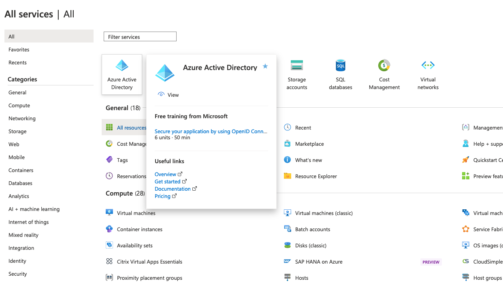
After clicking on Azure Active Directory click on App registrations. Then click on + New registration. For example, if your AD name was SureDrop, then this step would be:
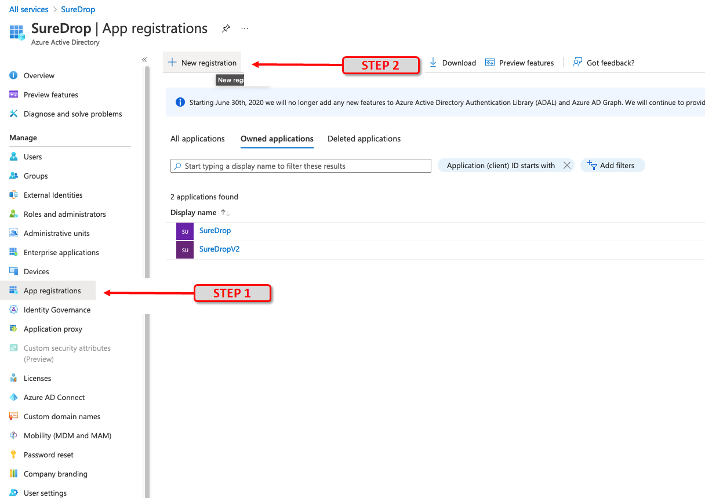Give it a name. Under Supported Account types select the default Accounts in this organizational directory only. Then select application type of Web and paste your SureDrop URL into the Redirect URI (optional) field. (for example, https://suredrop.dev). Microsoft will return the authentication response to this URI after successfully authenticating the user using oAuth 2.0. Finally, click the Register button at the bottom of the page.
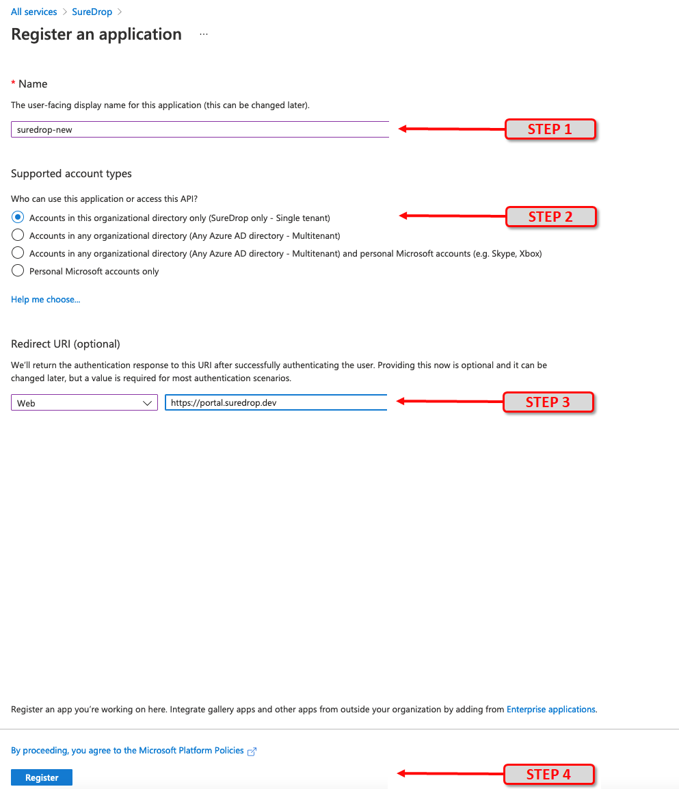Once the application is created successfully, copy and save the Application (client) ID and Directory (tenant) ID for use later. This information is required during SureDrop configuration.
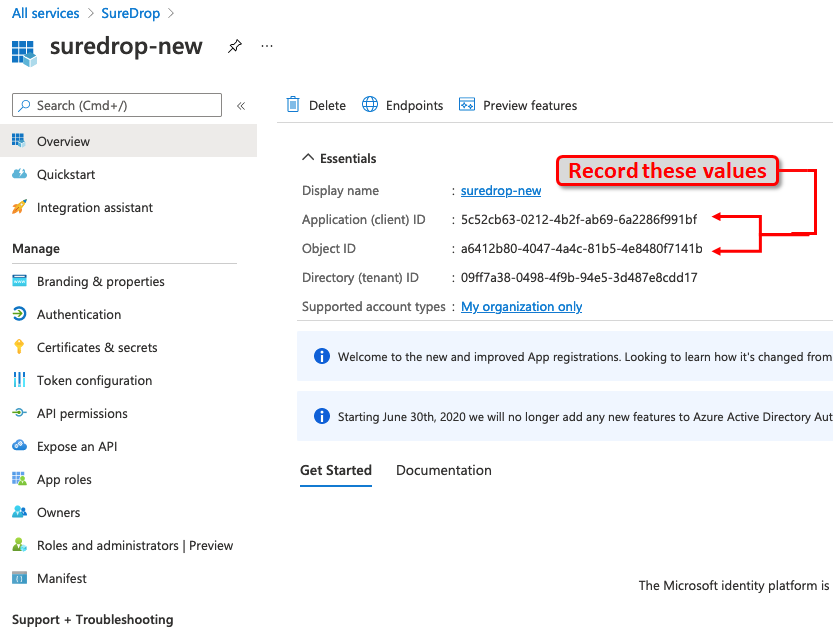Click on Authentication and then enter the same SureDrop URL (from step 1) in the Redirect URI’s input box under the Web panel. After this, tick the checkboxes for both Access tokens and ID tokens under the Implicit Grant section.
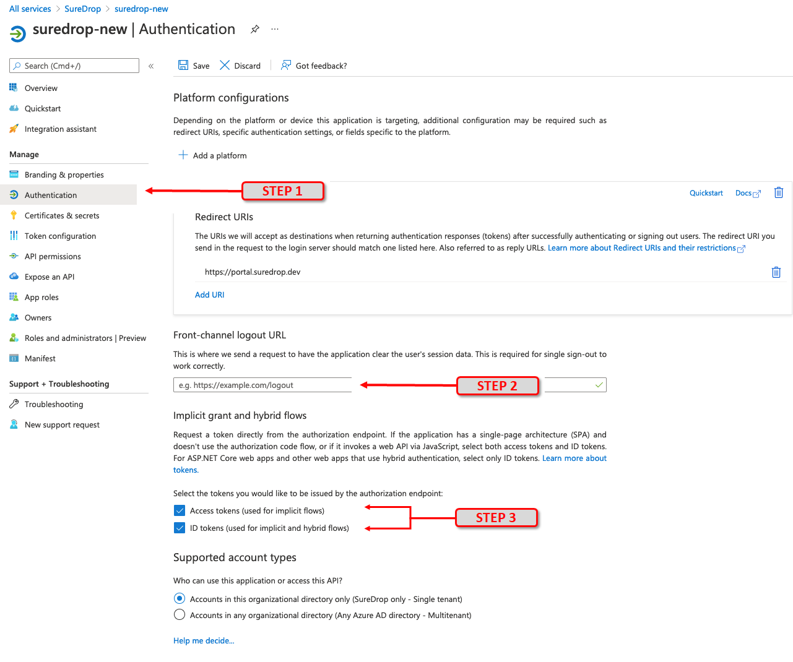Click on Certificates & secrets then click on New client secret button. In the popup window fill in a description, for example Key and choose 24 months in the Expires category. Then click on the Add button. A client secret is a string that the application uses to prove its identity when requesting a token in the background.
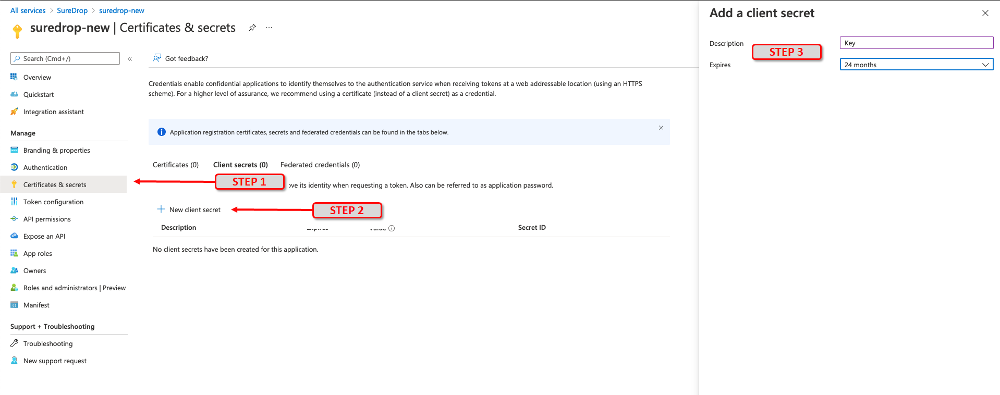After successful generation of the key, please copy the key value and store it in a safe location. You will need this in the following section while configuring SureDrop (API Key).
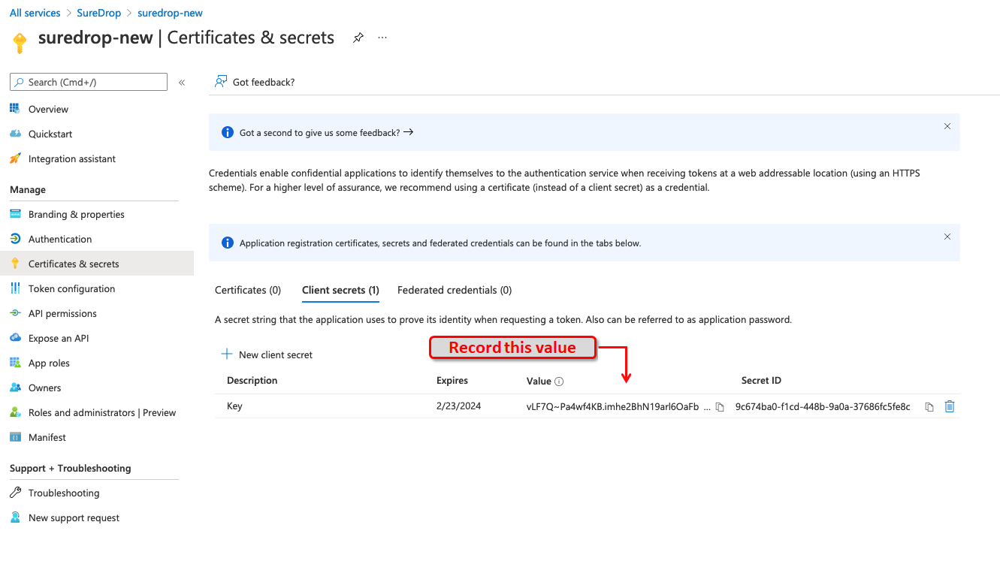The next step is configure API permissions. Applications are authorised to use APIs by requesting permissions. These permissions are invoked during the consent process, wherby users are given the opportunity to grant/deny access. To do this, click on API permissions and then the Add a permission button. From the slider on the right choose Microsoft Graph
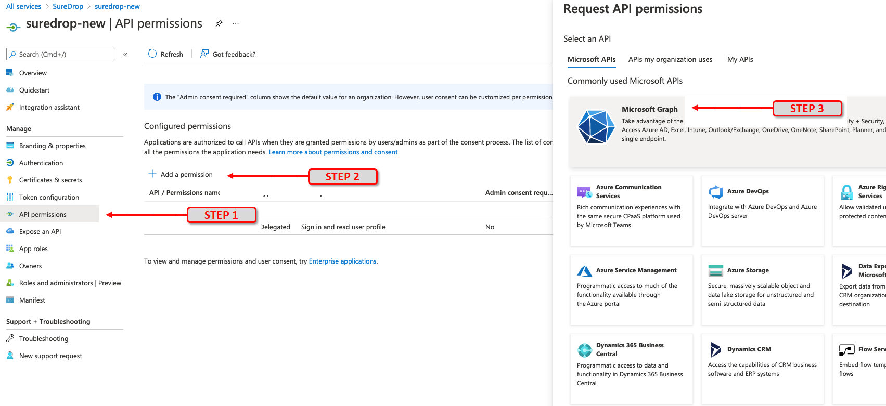From the sliding right panel click on Application permissions, expand Directory and tick the checkbox for Directory.Read.All permission and click on Add Permissions.
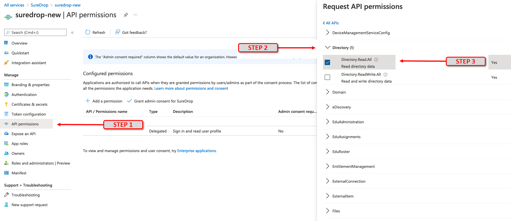Then click on Delegated permissions button on the left, expand User and tick the checkbox for User.Read permission. Finally, click on the Add permissions button to save the changes.
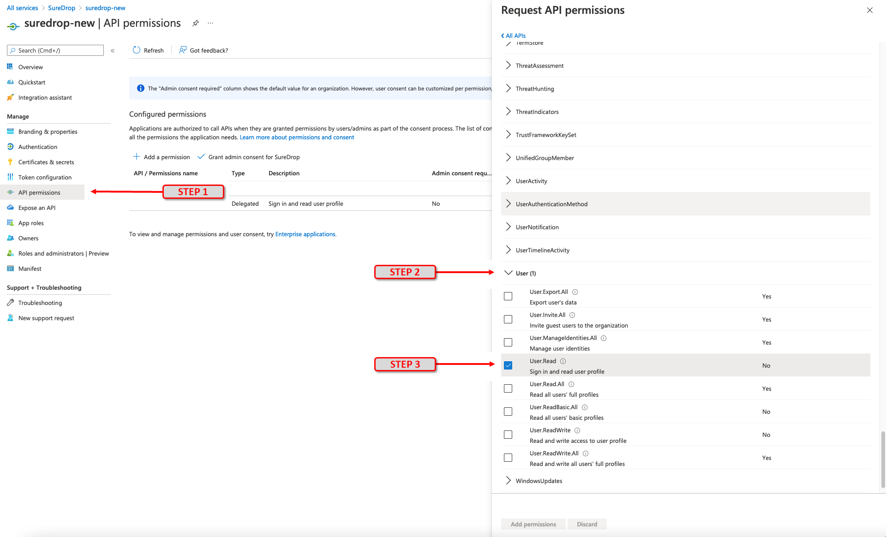The API permission to access and read Directory data (as setup in an instruction outlined above) needs Azure AD administrator consent. In the API permissions window, click on the Grant admin consent and select Yes in the popup confirmation dialog.
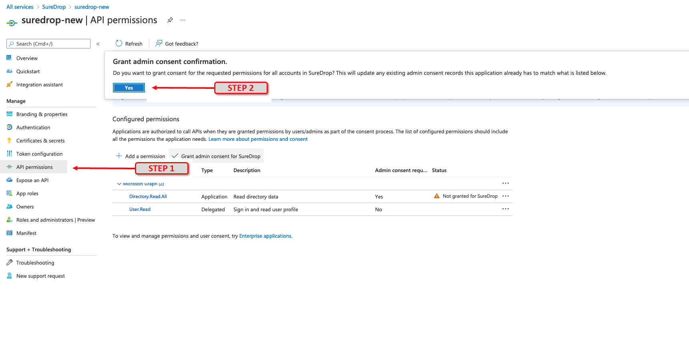Once all the required API permissions are set correctly, the final screen should look similar to the one shown below.
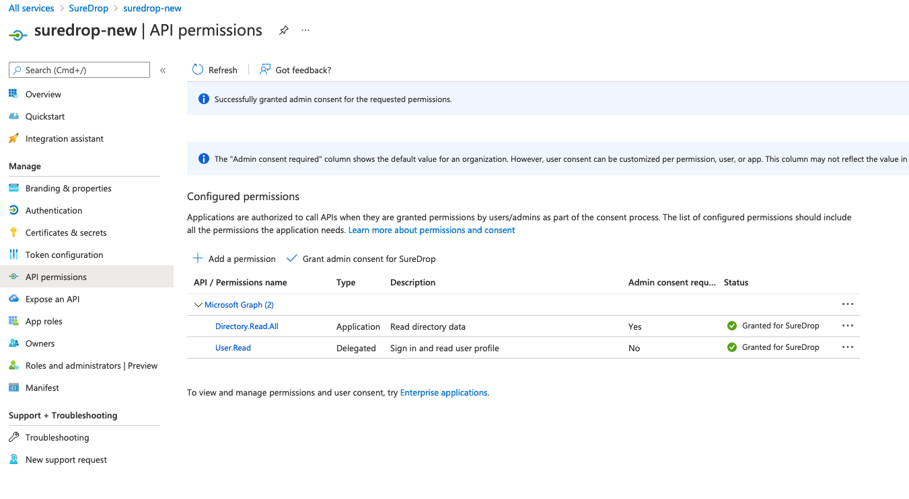Click on Manifest and confirm that the parameter oauth2AllowImplicitFlow is shown as set to true.
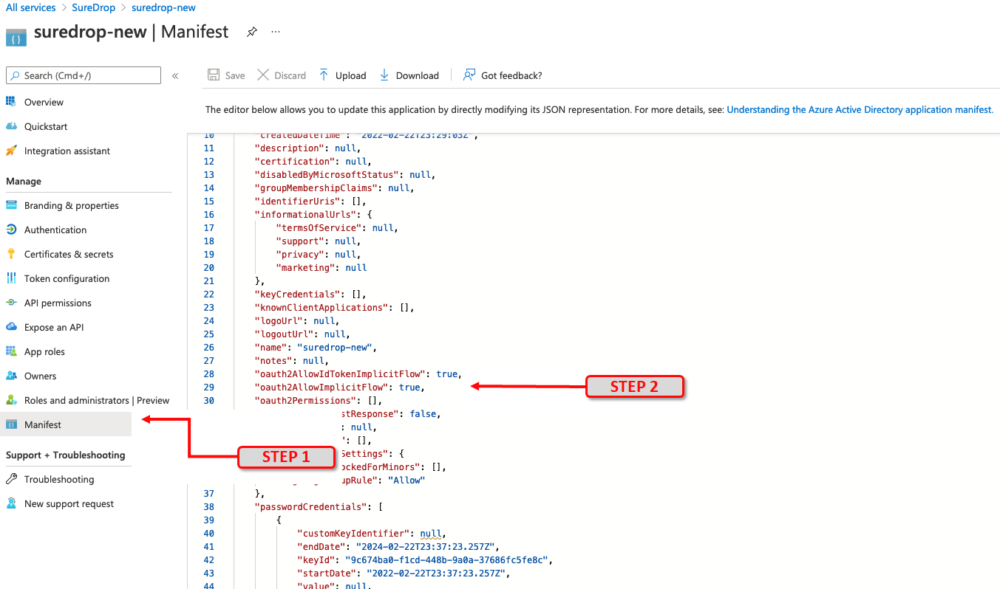Edit the following URL by replacing TENANT_ID, APPLICATION_ID and SUREDROP_URL_FROM_STEP_2 with the values recorded earlier. Cut and paste the revised URL into a browser:
https://login.microsoftonline.com/[TENANT_ID]/adminconsent?client_id=[APPLICATION_ID]&state=12345&redirect_uri=[SUREDROP_URL_FROM_STEP_2]
You will be asked to Log In to your Azure account as an Administrator and accept the permissions.
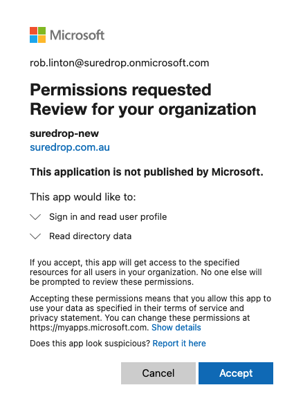To enable SureDrop synchronisation, you need to create a root group for the application. To do this, click on Home then Azure Active Directory and finally Groups
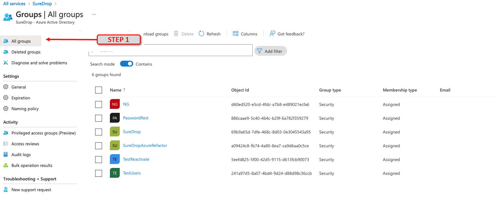In the groups page, choose any existing group or create a new GroupId to act as the root location for SureDrop.
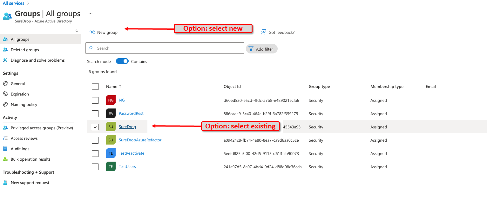If all the configuration has been entered correctly, you should now be in the specific page for your group, which shows its Object ID. This is an important identifier, so it is strongly recommended to copy it and record it in safe location. The ID will be required while configuring SureDrop in the next section (Options blob).
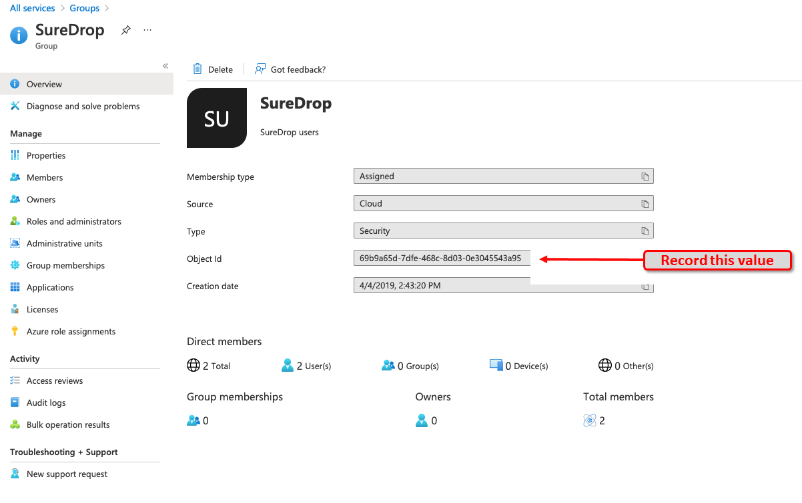
Setup SureDrop for Azure AD
Once you’ve setup the Azure AD application, login to your SureDrop
instance as an administrator or forensic user. Click on the Admin
page and expand Identity Provider Settings.
Then click on the Azure AD Integration sub-menu as shown in the picture below -
This will open a pop-up modal dialog where you’ll need to enter the
application ID, tenant ID and API key from the previous
section; and a set of SureDrop JSON options for your Azure AD instance.
Don’t forget to tick the :guilabel:`Turn on Azure AD Integration` checkbox
or none of it will work. The options should have
{"GroupId":"**REPLACE-ME**", "SupportDetails":"**REPLACE-ME**"}
filled in the input box. This is the root group which will be
synchronised to SureDrop. The GroupId is the object Id of the root
group in Azure AD.
So,
all users and groups which are members to this root group will be brought into SureDrop
the users will be added automagically to the relevant groups by default
if any changes are done to this root group in Azure AD, they will reflect in SureDrop within a preconfigured interval (currently set to 2 minutes).
Note: This feature is a one-way synchronisation. SureDrop pulls down information from Azure AD and updates itself, but NEVER alters the state of your Azure AD.
Windows Server Active Directory Integration
SureDrop has the capability to connect and synchronise user and group information from windows server AD or other directory services in your domain controller using Lightweight Directory Access Protocol (LDAP). This functionality is available from version 2.6.0 onwards. It is a simple configuration in SureDrop. To enable this synchronisation,
navigate to Admin Settings > LDAP Integration option. This will open a pop-up modal dialog where you’ll need to tick on the :guilabel:`Turn on LDAP Integration` checkbox.
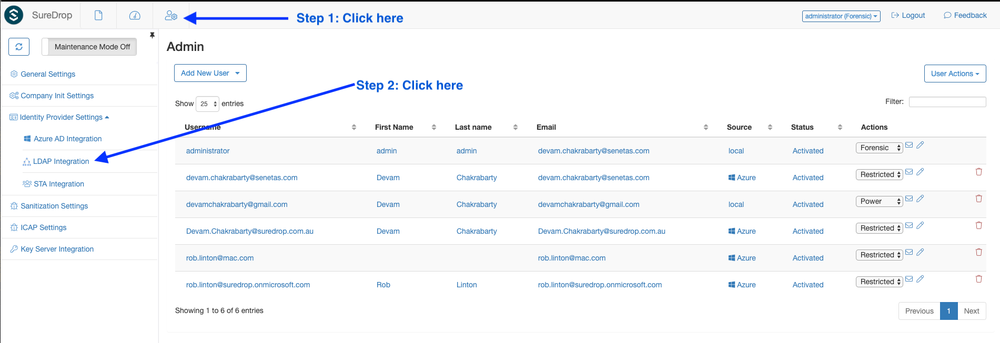Fill in the LDAP options in the form of a JSON structure. In theory, the block should look like this -
{
"GroupId": "**REPLACE-ME**",
"ActiveDirectory": true,
"ServerIpV4": "x.x.x.x",
"UserName": "example-user",
"Password": "example-pwd",
"SupportDetails": "**REPLACE-ME**"
}
Important
Don’t forget to tick on the Turn on LDAP Integration checkbox.
The GroupId for active directory must be the ObjectGUID for
the root group. Use the
Get-ADGroup
powershell command to find the correct value. For example,
Get-ADGroup -Identity SureDrop
DistinguishedName : CN=SureDrop,DC=Example,DC=com
GroupCategory : Security
GroupScope : DomainLocal
Name : SureDrop
ObjectClass : group
ObjectGUID : 02ce3874-dd86-41ba-bddc-013f34019978
SamAccountName : SureDrop
SID : S-1-5-32-544
Note
The Active Directory module for Windows PowerShell is a PowerShell
module that consolidates a group of cmdlets. You can use these
cmdlets to manage your Active Directory domains, Active Directory
Lightweight Directory Services (AD LDS) configuration sets, and
Active Directory Database Mounting Tool instances in a single,
self-contained package. If you don’t have the Active Directory
module installed on your machine, you need to download the correct
Remote Server Administration Tools (RSAT) package for your OS.
If you’re running windows 7, you will also need to run the
import-module ActiveDirectory command from an elevated
PowerShell prompt.
Safenet Trusted Access Integration
SafeNet Trusted Access (STA) has been integrated with SureDrop using OIDC protocol. The configuration (similar to Azure) is a two step process. First the administrator needs to configure STA (create groups, users, an OIDC application) and then configure SureDrop to connect to the IDP. SureDrop then downloads the user information and allows SSO (single-sign-on) using STA.
Setup Safenet Trusted Access
If you know how to setup STA then please skip to the next section, otherwise this is a good place to start reading about configuring STA.
Add users in STA.
Add an internal group called SureDrop in STA and add the required users to this group. The documentation is given here.
Create an OIDC application in STA called SureDrop. You can customise this application according to your branding requirements, the only constraints are:
the
Allowed Flow Typemust be set to Implicit flow.the
User Info Signature Algorithmmust be set to unsigned.the
Request Signature Algorithmmust be set to any.
Tip
Append the SureDrop company name to the service login URL as shown in the snapshot below
The documentation explaining all the parameters involved in this setup is given here.
Finally, the STA administrator needs to create an API Key for SureDrop to communicate to STA. The process is described in this page. It is imperative to save the API key and the
Endpoint URLas you’ll need them in the next step during configuring SureDrop.Note
API keys are not stored on the STA Access Management console, and cannot be viewed or downloaded later. Make sure that you copy or download the API key, so that you can use it later.
A typical setup would look similar to this:
Setup SureDrop for Safenet Trusted Access
To open the STA Integration dialog go to the admin page. If the side-bar menu is in normal state (not collapsed) then expand the Identity Provider Settings menu and click on STA Integration menu. If the side-bar menu is collapsed, then find the STA Integration menu shown by a user collection icon (7th menu item from the top). This dialog will appear with the following defaults
{
"ClientId": "**REPLACE-ME**",
"ClientSecret": "**REPLACE-ME**",
"AuthEndpoint": "**REPLACE-ME**",
"TokenEndpoint": "**REPLACE-ME**",
"UserInfoEndpoint": "**REPLACE-ME**",
"ConfigEndpoint": "**REPLACE-ME**",
"RestApiDetails": {
"Endpoint": "**REPLACE-ME**",
"Key": "**REPLACE-ME**",
"PageSize": 10
},
"SupportDetails": "**REPLACE-ME**"
}
Replace the **REPLACE-ME** bits with the information displayed in
STA admin console, tick on the Turn on STA Integration checkbox
and click on the green tick icon. And that’s it! Next time when a STA
user tries to login, SureDrop will federate the login via STA using
OIDC.
Important
Please wait for a few minutes for the STA users to be imported to SureDrop. The synchronisation is done every couple of minutes but for the very first time it might take a little longer, depending on the number of users being imported and activated in SureDrop.
Known issues
Avoid usernames with special characters (especially the at
@symbol) while adding users in STA. At this time users with such usernames cannot login to SureDrop due to a403 Forbidden Accesserror.If you update the username for a user in STA, it usually takes a couple of minutes to synchronise that information in SureDrop. When the updated user is available in SureDrop, it has been observed that the login fails in STA unless the end user uses a Private Browsing window (also known as Incognito mode).
When the end user initiates the login process from STA user portal, then he must enter his username in the SureDrop login page too.